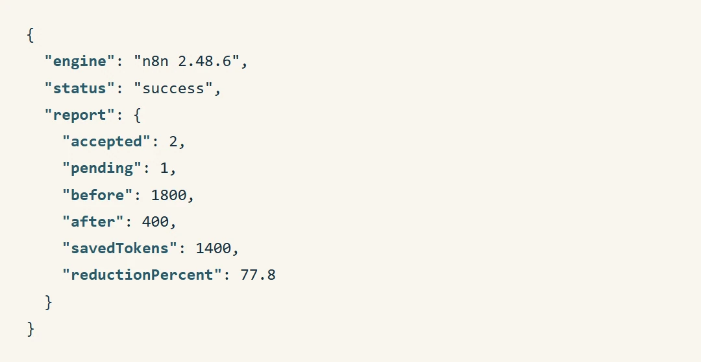

← 全部作品／ 工作流程


成果1,800 → 400 Token（示例測試）
§ 重點
一眼看懂
- 流程
- 接收用量接收上游紀錄，沿用同一套驗收條件，分開輸入及輸出 Token。
- 配對版本按個案配對 before 和 after。
- 計算結果只合計前後均通過驗收的配對，保留每一項的原數值，供團隊追查。
- 工具
- n8n
- JavaScript
- JSON
§ 試用
親手試用
用量對帳
n8n 工作流比較前後
兩次執行。
載入示例紀錄，或貼上匿名 JSON。只有前後均通過驗收的任務會納入比較。
查看或更換輸入資料
每個 caseId 的 before 和 after 各一筆。inputTokens 和 outputTokens 填總用量，accepted 填 true、false 或 null。§ 做法做法細節
已用 n8n 2.48.6 實跑。示例例子中兩項合格、一項待覆核；可替換成自己的紀錄。
核心邏輯
- 輸入
- 每筆紀錄要有個案編號、版本（before／after）、輸入和輸出 Token（非負整數）及驗收結果（通過／不通過／未驗收）。
- 驗證
- 格式不符即拒絕並說明原因；同一個案同一版本出現兩次會報錯，要求先合計同一輪的所有呼叫。
- 配對
- 按個案配對前後兩版；缺一邊標「未配對」，任一邊未通過驗收標「待覆核」。
- 合計
- 只合計兩邊都通過驗收的配對，避免用質素下降換取 Token 減少。
- 實跑
- 已在 n8n 2.48.6 實跑。
接收用量
接收上游紀錄，沿用同一套驗收條件，分開輸入及輸出 Token。
配對版本
按個案配對 before 和 after。重複、缺資料及待覆核的紀錄分開處理。
計算結果
只合計前後均通過驗收的配對，保留每一項的原數值，供團隊追查。